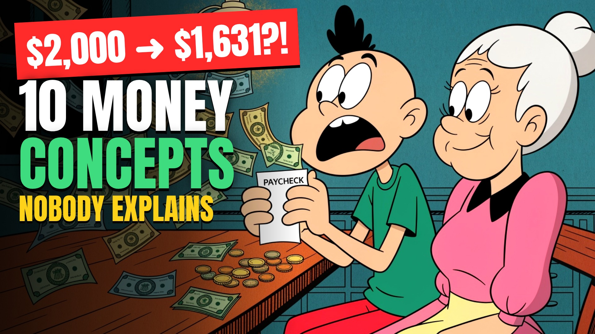

10 Money Concepts Nobody Explains
Finance with Stromi · video 06 (Basic Financial Concepts) · launch kit v1. Waiting for Pushpam's OK. Nothing is booked yet.
Full video (v1)
Thumbnail

Title options
- 110 Money Concepts Nobody Explains (Until It Costs You)54 charsRecommended
- 2Where Did My Paycheck Go? 10 Money Ideas in 15 Minutes54 chars
- 310 Money Concepts Nobody Explains33 chars
Description
Theo is 22 and just got his first real paycheck: $2,000. Then $1,631 lands in his account. Where did $369 go? His Nana June spent 41 years behind a bank counter, and she walks him through the 10 money ideas nobody explains at school: taxes, banks, interest, inflation, recessions, credit scores, what money really is, investing, value, and time. In this animated explainer you'll see why your bank isn't a safe (and why your money is still insured), how a $1,000 laptop on a credit card can cost you about $1,850, why a bag of chips is 20% air, why a recession is not just "two bad quarters", how an island counted a stone at the bottom of the sea as money, and why Pip, who invested for only 10 years, ends up with more than Gus, who invested for 30. ⏱️ CHAPTERS 0:00 Friday Night: Where Did $369 Go? 1:01 1. Taxes 2:33 2. Banks 4:10 3. Interest 5:36 4. Inflation 7:09 5. Recessions 8:30 6. Credit Scores 9:41 7. What Money Is 11:01 8. Investing 12:16 9. Value 13:21 10. Time 14:35 Your Wallet: One Plan 💬 Which of the 10 did nobody ever explain to you? Tell us in the comments. 🔔 Subscribe to Finance with Stromi for money, explained simply. Theo, Nana June and the rest of the cast are made-up characters, and Theo's paystub is an example (US, single filer, 2026). This channel explains money. It isn't financial advice. Sources: SSA 2026 fact sheet (Social Security 6.2%, wage base $184,500); IRS Topic 751 (Medicare 1.45%) and Rev. Proc. 2025-32 (2026 brackets); FDIC deposit insurance FAQs ($250,000; no insured funds lost since 1934); FDIC/OTS on Washington Mutual (Sept 2008); California DFPI order on Silicon Valley Bank (10 Mar 2023); Federal Reserve G.19 consumer credit (credit card rates, Nov 2026); BLS CPI (Sept 2026); Federal Reserve statement on longer-run goals (2% target); NBER Business Cycle Dating Committee; myFICO (score range and weights) and FICO Score Credit Insights (avg 714); Federal Reserve History, "Nixon Ends Convertibility" (15 Aug 1971); William Furness, "The Island of Stone Money" (1910); Adam Smith, The Wealth of Nations (1776); Jeremy Siegel, Stocks for the Long Run. Compound growth figures are our own calculations. Music by Kevin MacLeod (incompetech.com), licensed under Creative Commons: By Attribution 4.0 License, http://creativecommons.org/licenses/by/4.0/ Tracks: Carefree, Investigations, Sneaky Snitch, Thinking Music, Hidden Agenda, Hep Cats, Fluffing a Duck, Dark Times, Wallpaper, Cool Vibes, Gymnopedie No 1. Sound effects: BigSoundBank.com. #PersonalFinance #MoneyBasics #FinancialLiteracy #Investing #Budgeting
Chapters
0:00Friday Night: Where Did $369 Go?1:011. Taxes2:332. Banks4:103. Interest5:364. Inflation7:095. Recessions8:306. Credit Scores9:417. What Money Is11:018. Investing12:169. Value13:2110. Time14:35Your Wallet: One Plan
Tags
Dashed = constant channel tags (always kept). Others are this video's own.
finance with stromi, stock market explained, finance explained, investing for beginners, money news, economy explained, personal finance, 401k, stock market news, animated explainer, money concepts, financial literacy, money basics, how taxes work, how banks work, compound interest, inflation explained, what is a recession, credit score explained, what is money, first paycheck, fdic insurancePinned first comment
Nana June says the lasagne is now $12. Which of the 10 did nobody ever explain to you?